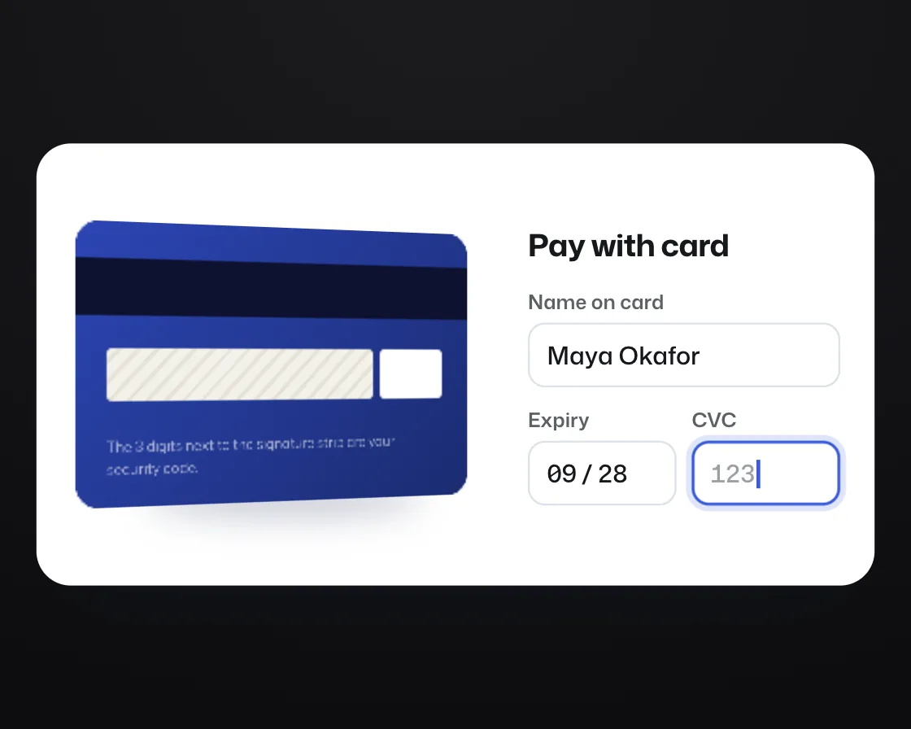

3D card flip
3D card flip is a DOM effect: rotateY on a spring, with the back face hidden. One plain JavaScript file with no dependencies; add it with npx motion-library add card-flip.

Open it live, tune it and copy the code
What is 3D card flip?
At checkout the card preview turns over when the CVC field gets focus, and back afterwards.
How does 3D card flip work?
Two faces sit back to back with backface-visibility hidden and perspective on the parent; a spring drives the angle, so it overshoots slightly and settles.
How do I add 3D card flip to my website?
- In your project folder, run
npx motion-library add card-flip. It writesanimations/card-flip.js. Needs Node 18 or newer. - Import it and call it with a container element that has a size:
import fx from './animations/card-flip.js'; const stop = fx(document.querySelector('#hero')); - Call
stop()to clean up, for example when a component unmounts.
Every setting below is also a flag, so you can install it already tuned: npx motion-library add card-flip --perspective 2000.
What settings can I tweak?
| Setting | Flag | Default | Range | Step |
|---|---|---|---|---|
| Perspective (px) | --perspective | 900 | 300 to 2000 | 10 |
| Stiffness | --stiffness | 160 | 40 to 400 | 5 |
| Damping | --damping | 13 | 4 to 40 | 1 |
Specifications
- Renderer
- DOM (CSS and the Web Animations API)
- Category
- Basics
- Dependencies
- None
- File size
- 8.7 KB, unminified
- Interactive
- No: it plays on its own
- Reduced motion
- Respects prefers-reduced-motion
- Licence
- MIT-0: use it anywhere, no credit needed
Source code
// 3D card flip: at checkout, the card preview turns over on a spring when the CVC field takes focus, and turns back when you leave it.
// Two faces are glued back to back with the far one hidden; perspective on the parent gives the turn depth, and the spring lets it overshoot a few degrees and settle like a real card.
const PARAMS = { perspective: 900, stiffness: 160, damping: 13 };
export default function (stage) {
const reduce = matchMedia('(prefers-reduced-motion: reduce)').matches;
const AW = 440, AH = 232;
const root = document.createElement('div');
root.className = 'cf-root';
root.innerHTML = `<style>
.cf-root { position: absolute; inset: 0; background: #e9edf7; overflow: hidden; color: #15171a; font-family: "Mona Sans", system-ui, -apple-system, sans-serif; }
.cf-board { position: absolute; left: 50%; top: 50%; width: ${AW}px; height: ${AH}px; box-sizing: border-box; padding: 18px; display: grid; grid-template-columns: 222px 1fr; gap: 18px; align-items: center; background: #fff; border-radius: 18px; box-shadow: 0 1px 2px rgba(20,30,60,.06), 0 18px 40px -24px rgba(20,30,60,.35); }
.cf-scene { position: relative; height: 140px; }
.cf-shadow { position: absolute; left: 12%; right: 12%; bottom: -10px; height: 18px; border-radius: 50%; background: rgba(20,30,80,.32); filter: blur(9px); }
.cf-card { position: absolute; inset: 0; transform-style: preserve-3d; }
.cf-face { position: absolute; inset: 0; border-radius: 12px; backface-visibility: hidden; -webkit-backface-visibility: hidden; overflow: hidden; color: #fff; }
.cf-front { background: radial-gradient(120% 90% at 85% 0%, rgba(255,255,255,.18), transparent 55%), linear-gradient(135deg, #3651c9, #1b2b70); padding: 14px 16px; box-sizing: border-box; }
.cf-chip { position: absolute; left: 16px; top: 38px; width: 30px; height: 23px; border-radius: 5px; background: linear-gradient(135deg, #f1d58c, #c9a24c); box-shadow: inset 0 0 0 1px rgba(0,0,0,.12); }
.cf-chip::before { content: ""; position: absolute; inset: 7px 0; border-top: 1px solid rgba(0,0,0,.18); border-bottom: 1px solid rgba(0,0,0,.18); }
.cf-bank { font-size: 11px; font-weight: 700; letter-spacing: .06em; opacity: .9; }
.cf-wave { position: absolute; right: 16px; top: 40px; width: 18px; height: 18px; }
.cf-num { position: absolute; left: 16px; top: 76px; font-size: 15px; font-weight: 560; letter-spacing: .08em; font-variant-numeric: tabular-nums; }
.cf-foot { position: absolute; left: 16px; right: 16px; bottom: 12px; display: flex; justify-content: space-between; font-size: 11.5px; font-weight: 600; letter-spacing: .04em; }
.cf-foot small { display: block; font-size: 7.5px; font-weight: 600; opacity: .65; margin-bottom: 2px; letter-spacing: .08em; }
.cf-back { transform: rotateY(180deg); background: linear-gradient(135deg, #2c45b4, #1b2b70); }
.cf-stripe { position: absolute; left: 0; right: 0; top: 18px; height: 28px; background: #0d1230; }
.cf-sign { position: absolute; left: 16px; right: 58px; top: 62px; height: 26px; border-radius: 3px; background: repeating-linear-gradient(-45deg, #f3f1ea 0 5px, #e6e2d6 5px 7px); }
.cf-cvc { position: absolute; right: 16px; top: 62px; width: 38px; height: 26px; border-radius: 3px; background: #fff; color: #15171a; display: grid; place-items: center; font: italic 600 13px/1 ui-monospace, Menlo, monospace; }
.cf-cvc::after { content: ""; position: absolute; inset: -4px; border-radius: 6px; box-shadow: 0 0 0 2px #ffd43b; opacity: var(--hl, 0); }
.cf-note { position: absolute; left: 16px; right: 16px; bottom: 14px; font-size: 7.5px; line-height: 1.4; opacity: .6; }
.cf-form h3 { margin: 0 0 12px; font-size: 16px; font-weight: 700; letter-spacing: -0.015em; font-stretch: 106%; }
.cf-row { display: grid; grid-template-columns: 1fr 1fr; gap: 8px; margin-top: 10px; }
.cf-field label { display: block; font-size: 10.5px; font-weight: 600; color: #5b6066; margin-bottom: 4px; }
.cf-input { position: relative; height: 34px; border-radius: 9px; box-shadow: inset 0 0 0 1px #dce1ea; padding: 0 10px; display: flex; align-items: center; font-size: 13px; font-weight: 520; font-variant-numeric: tabular-nums; }
.cf-input::after { content: ""; position: absolute; inset: 0; border-radius: inherit; box-shadow: inset 0 0 0 1.5px #3b5bdb, 0 0 0 3px rgba(59,91,219,.16); opacity: 0; transition: opacity 160ms cubic-bezier(0.23, 1, 0.32, 1); }
.cf-input.on::after { opacity: 1; }
.cf-caret { width: 1.5px; height: 15px; margin-left: 1px; background: #3b5bdb; display: none; animation: cf-blink 1s steps(1) infinite; }
.cf-input.on .cf-caret { display: block; }
.cf-ph { color: #9aa0a6; }
@keyframes cf-blink { 50% { opacity: 0; } }
</style>
<div class="cf-board">
<div class="cf-scene"><div class="cf-shadow"></div><div class="cf-card">
<div class="cf-face cf-front"><div class="cf-bank">DEBIT</div><div class="cf-chip"></div>
<svg class="cf-wave" viewBox="0 0 24 24" fill="none" stroke="#fff" stroke-width="2" stroke-linecap="round" opacity=".85"><path d="M8 7a8 8 0 0 1 0 10M12 4.5a12 12 0 0 1 0 15M16 2a16 16 0 0 1 0 20"/></svg>
<div class="cf-num">•••• •••• •••• 3390</div>
<div class="cf-foot"><div><small>CARDHOLDER</small>MAYA OKAFOR</div><div><small>EXPIRES</small>09/28</div></div></div>
<div class="cf-face cf-back"><div class="cf-stripe"></div><div class="cf-sign"></div><div class="cf-cvc"></div><div class="cf-note">The 3 digits next to the signature strip are your security code.</div></div>
</div></div>
<div class="cf-form"><h3>Pay with card</h3>
<div class="cf-field"><label>Name on card</label><div class="cf-input" data-f="name">Maya Okafor<i class="cf-caret"></i></div></div>
<div class="cf-row"><div class="cf-field"><label>Expiry</label><div class="cf-input" data-f="exp">09 / 28<i class="cf-caret"></i></div></div>
<div class="cf-field"><label>CVC</label><div class="cf-input" data-f="cvc"><span class="cf-ph">123</span><i class="cf-caret"></i></div></div></div>
</div>
</div>`;
stage.append(root);
const board = root.querySelector('.cf-board'), scene = root.querySelector('.cf-scene'), card = root.querySelector('.cf-card'), shadow = root.querySelector('.cf-shadow');
const backCvc = root.querySelector('.cf-cvc'), back = root.querySelector('.cf-back');
const inputs = Object.fromEntries([...root.querySelectorAll('.cf-input')].map(el => [el.dataset.f, el]));
scene.style.perspective = PARAMS.perspective + 'px';
// Reduced motion: no turn; the back face sits flat on top and cross-fades in and out.
if (reduce) { back.style.transform = 'none'; back.style.opacity = '0'; back.style.transition = 'opacity 220ms ease'; }
const fit = () => { const s = Math.min(stage.clientWidth / AW, stage.clientHeight / AH) * 0.92; board.style.transform = `translate(-50%, -50%) scale(${Math.min(s, 1.6)})`; };
const ro = new ResizeObserver(fit); ro.observe(stage); fit();
const timers = new Set();
const later = (fn, ms) => { const id = setTimeout(() => { timers.delete(id); fn(); }, ms); timers.add(id); };
let target = 0;
const focus = f => Object.entries(inputs).forEach(([k, el]) => el.classList.toggle('on', k === f));
const setCvc = v => {
inputs.cvc.firstChild.replaceWith(Object.assign(document.createElement('span'), { className: v ? '' : 'cf-ph', textContent: v || '123' }));
backCvc.textContent = v;
};
function cycle() {
focus('name'); target = 0; back.style.setProperty('--hl', 0);
later(() => focus('exp'), 1000);
later(() => { focus('cvc'); target = 180; }, 2000);
later(() => back.style.setProperty('--hl', 1), 2400);
['4', '47', '472'].forEach((v, i) => later(() => setCvc(v), 2650 + i * 170));
later(() => { focus('name'); target = 0; }, 4300);
later(() => { setCvc(''); back.style.setProperty('--hl', 0); }, 5300);
later(cycle, 5600);
}
cycle();
let angle = 0, vel = 0, last = performance.now(), raf;
function frame(now) {
if (reduce) { back.style.opacity = target ? '1' : '0'; raf = requestAnimationFrame(frame); return; }
const dt = Math.min(0.032, (now - last) / 1000); last = now;
// semi-implicit Euler, 4 substeps for stability
for (let i = 0; i < 4; i++) {
const h = dt / 4, acc = -PARAMS.stiffness * (angle - target) - PARAMS.damping * vel;
vel += acc * h; angle += vel * h;
}
const side = Math.abs(Math.sin(angle * Math.PI / 180));
card.style.transform = `rotateY(${angle.toFixed(2)}deg) scale(${(1 + 0.06 * side).toFixed(4)})`;
shadow.style.opacity = (1 - 0.55 * side).toFixed(3);
shadow.style.transform = `scaleX(${(1 - 0.3 * side).toFixed(3)})`;
raf = requestAnimationFrame(frame);
}
raf = requestAnimationFrame(frame);
return () => { timers.forEach(clearTimeout); cancelAnimationFrame(raf); ro.disconnect(); root.remove(); };
}